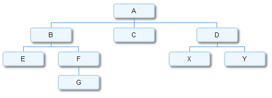

There are several techniques available for serializing trees. In this post I want to present one interesting technique I recently ran into, in the context of the DWARF debugging information format [1]. It allows serializing generic N-ary trees (where each node can have any number of children) into a linear data structure suitable for storage or tramsmission.
First, let's define the data structures involved. I will use Python code to demonstrate the algorithm, so a simplistic tree node would be:
class TreeNode(object):
def __init__(self, data):
self.data = data
self.children = []
children is a list of other TreeNode objects, which makes each node the root of a sub-tree that can be traversed.
Now let's build an actual tree which we're going to use for demonstration purposes:
tree = {}
for n in 'ABCDEFGXY':
tree[n] = TreeNode(n)
tree['A'].children = [tree['B'], tree['C'], tree['D']]
tree['B'].children = [tree['E'], tree['F']]
tree['F'].children = [tree['G']]
tree['D'].children = [tree['X'], tree['Y']]
Here's how it looks [2]:
So how is a tree serialized?
Here's a quote from the DWARF v3 standard section 2.3 explaining it, slightly rephrased:
The tree itself is represented by flattening it in prefix order. Each node is defined either to have children or not to have children. If a node is defined not to have children, the next physically succeeding node is a sibling. If a node is defined to have children, the next physically succeeding node is its first child. Additional children are represented as siblings of the first child. A chain of sibling entries is terminated by a null node.
After a couple of minutes of thought it should become obvious that this indeed creates a serialized representation that is reversible. For my Python code, the serialized representation is going to be a list of "entries", each entry being either None (to specify the "null node" from the description above), or a pair of (data, has_children_flag), with data being the tree node data, and has_children_flag a boolean specifying whether this node has children. So for the tree depicted above, the serialized representation is:
A,True
B,True
E,False
F,True
G,False
None
None
C,False
D,True
X,False
Y,False
None
None
The algorithms for serializing a tree into this representation and deserializing it back are charmingly simple. Here they are, with Python (as usual) serving as pseudo-code as well as the implementation.
First, serialization. The main idea is to walk the tree recursively in pre-order (first visiting a node, then its children in order), while populating the serialized list which exists outside the recursive visitor:
def serialize_tree(root_node):
""" Given a tree root node (some object with a 'data' attribute
and a 'children' attribute which is a list of child nodes),
serialize it to a list, each element of which is either a
pair (data, has_children_flag), or None (which signals an
end of a sibling chain).
"""
lst = []
def serialize_aux(node):
# Recursive visitor function
if len(node.children) > 0:
# The node has children, so:
# 1. add it to the list & mark that it has children
# 2. recursively serialize its children
# 3. finally add a null entry to signal that the children
# of this node have ended
lst.append((node.data, True))
for child in node.children:
serialize_aux(child)
lst.append(None)
else:
# The node is child-less, so simply add it to
# the list & mark that it has no chilren
lst.append((node.data, False))
serialize_aux(root_node)
return lst
And now deserialization. It uses a stack of "parents" to collect the nodes into a tree hierarchy. At each step in the loop the invariant is that the node at the top of the stack is the parent node to which nodes have to be added. When an entry with children is encountered, a new node is pushed on top of the stack. When a null entry is encountered, it means the end of children for the current parent, so it's popped off the stack:
def deserialize_tree(nodelist):
""" Expects a node list of the form created by serialize_tree.
Each entry in the list is either None or a pair of the form
(data, has_children_flag).
Reconstruct the tree back from it and return its root node.
"""
# The first item in the nodelist represents the tree root
root = TreeNode(nodelist[0][0])
parentstack = [root]
for item in nodelist[1:]:
if item is not None:
# This node is added to the list of children of the current
# parent.
node = TreeNode(item[0])
parentstack[-1].children.append(node)
if item[1]: # has children?
parentstack.append(node)
else:
# end of children for current parent
parentstack.pop()
return root
The DWARF spec just mentions the serialization format (the quote I pasted above) - it doesn't say how to implement it. If you can think of a simpler algorithm to implement this (de)serialization scheme, please let me know.

| [1] | In DWARF this scheme is used to serialize a tree of DIEs (Debugging Information Entries) into the .debug_info section. |
| [2] | You may be wondering how this image was generated. I've used the excellent Google Visualization API to draw it, with the "orgchart" package. It's simple to write a bit of Python code that automatically generates the data table given a root of the tree. The visualization API renders the image onto a HTML canvas with Javascript. I then took a screenshot and converted the result to a PNG that's displayed here. |